EIA Home > Transportation Home Page > Chapter 4. Fuel Economy, Consumption, and Expenditures
Chapter 4. Fuel Economy,
Consumption, and
This chapter analyzes trends in fuel economy, fuel consumption, and fuel expenditures, using data unique to the Residential Transportation Energy Consumption Survey, as well as selected data from other sources. Analysis topics include the following:
- Following the oil supply and price disruptions caused by the Arab oil embargo of 1973-1974, motor gasoline price increases, the introduction of corporate average fuel economy standards, and environmental quality initiatives helped to spur major changes in vehicle technology. But have the many advances in vehicle technology resulted in measurable gains in the fuel economy of the residential vehicle fleet?
- Despite national concerns about dependence on foreign oil and the deleterious effect on the environment of fossil fuel combustion, residential vehicle fleet fuel consumption was almost 8 billion gallons higher in 1994 than it had been in 1988. What factors led to the increase?
- Residential expenditures for energy averaged $2,571 per household per year in 1994.(1) How much of the total was attributed to residential vehicle fuel expenditures? And how did those expenditures compare with other vehicle-related operating expenses, such as insurance, financing, licensing, and depreciation?
Fuel Economy Increased a Small Amount
During the1983-to-1991 period, the overall fuel economy of the residential fleet increased by nearly 28 percent (about 3.5 percent per year), which helped to hold down total consumption. However, for the 1991-to-1994 period, the overall increase in fuel economy from 19.3 miles per gallon (mpg) to 19.8 mpg was less than 3 percent (less than 1 percent per year). The large increase in the fleet fuel economy in the 1983-to-1991 period was due primarily to two factors: vehicles manufactured after 1982 had better fuel economy, and large numbers of pre-1983, lower fuel-economy vehicles were taken out of service. Each year, there are fewer pre-1983 vehicles to be replaced by newer vehicles, thus diminishing the opportunity for further increases in overall fleet fuel economy through replacement of older, lower fuel-economy vehicles with newer, higher fuel-economy vehicles.
The average fuel economy for the residential fleet was 19.8 mpg in 1994, an 8-percent increase over 1988, when household vehicles averaged 18.3 mpg. Average fuel economy would have increased by a greater amount if all technological improvements had been devoted solely to that purpose rather than to increasing vehicle size and performance. Passenger cars, averaging 21.9 mpg, had the highest fuel economy. Large vans, averaging 13.8 mpg, exhibited the worst fuel economy.
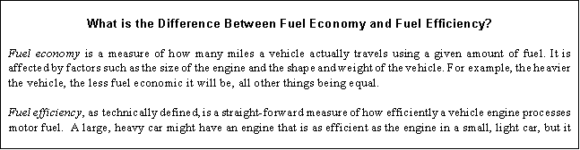
On Average, Newer Residential Vehicles Showed Little Improvement in Fuel Economy
In general, fuel economy varies considerably by age and type of vehicle. However, there was relatively little variation for model years 1980 and later (Figure 4.1), which represented nearly 90 percent of all household vehicles. If all vehicles of model years 1979 and earlier were removed from the residential fleet, the overall fuel economy would only increase from 19.8 mpg to 21.0 mpg. Any major increase in future years must therefore derive not from the retirement of older vehicles but from improvements in technology, and buying patterns of consumers.
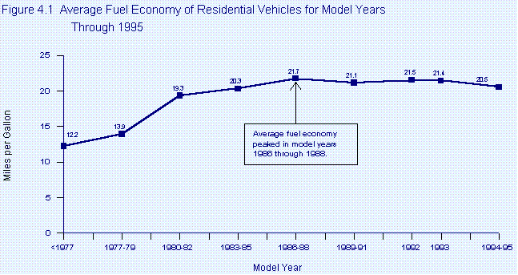
Source: Table 5.3 in this report.
Federal Government Set Lower Fuel Economy Standards for Light Trucks
One of the major factors affecting the average fuel economy is the composition of the vehicle fleet. New passenger cars in 1994 were subject to CAFE standards of 27.5 mpg (unadjusted) and the overall passenger fleet averaged 21.9 mpg, compared with 19.7 mpg in 1988 (Figure 4.2). New vehicles not classified as passenger cars--pickup trucks, sport-utility vehicles, minivans, and large vans, all classified as light-duty trucks-- were subject to lower CAFE standards of 20.5 mpg (unadjusted) and the overall fleet averaged 16.8 mpg in 1994. That average compares with 15.3 mpg in 1988. In 1994, large vans had the lowest mpg average of any category of light-duty truck and minivans had the highest. In addition to having lower CAFE standards, those vehicles were also exempt from the "gas guzzler" tax, which may have an effect on encouraging consumers to switch from larger, less fuel economic passenger cars to vehicles like minivans and sport utility vehicles which are even less fuel economic.
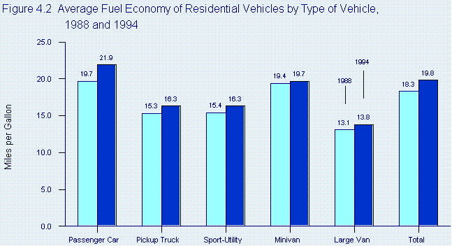
Sources: 1988--Energy Information Administration, Household Vehicles Energy Consumption 1988, DOE/EIA-0464(88) (Washington, DC, February 1990), Table 8. 1994--Table 5.3 in this report.
The number of vehicles getting less than 13 miles per gallon decreased rapidly from 1988 to 1994 (Figure 4.3). Residential vehicles getting 22 or more mpg increased by nearly 38 percent between 1988 and 1994. The number of vehicles in the range between 13 and 21.9 mpg increased, especially in the 16 to 18.9 miles per gallon category. Those intermediate ranges are where many new minivans, sport-utility vehicles, pickup trucks, and large vans would fall.
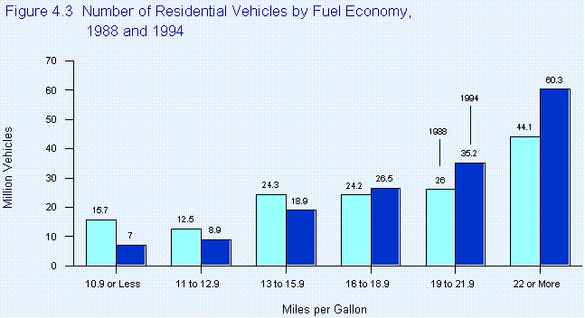
Sources 1988--Energy Information Administration, Household Vehicles Energy Consumption 1988, DOE/EIA-0464(88) (Washington, DC, February 1990), Table 6 1994--Table 5.1 in this report.
Household Composition and Income Had Little Effect on Residential Vehicle Fuel Economy
The fuel economy of vehicles in residential households showed little variation by household characteristics. Households without children did show an improvement in the fuel economy of their vehicles when the oldest adult was under 35 years of age, as compared with households in which the oldest adult was 60 years old or more (Figure 4.4). Household income appears to have had even less effect on the fuel economy of vehicles in the household than did household composition. Interestingly (although not statistically significant), households with less than $5,000 of annual income had the most fuel-economic vehicles (Figure 4.5).
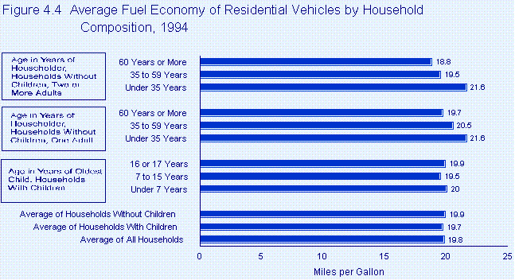
Note:
Household composition refers to the number and ages of people in the household.
Source: Table 5.3 in this report.
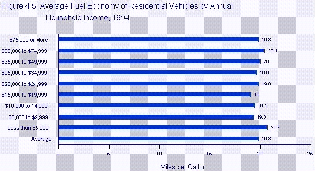
Sources: Table 5.3 in this report.
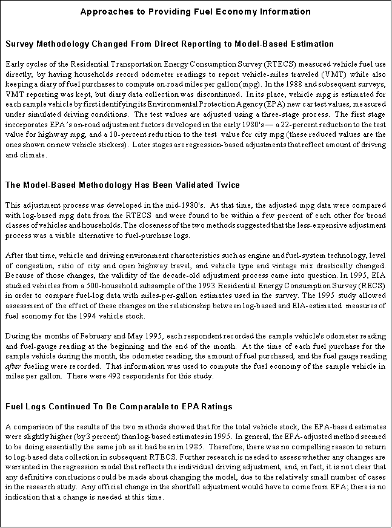
Fuel Consumption Increased in 1994
In 1991, 82.8 billion gallons of motor fuel were consumed by the passenger cars, minivans, sport-utility vehicles, pickup trucks, and large vans that comprise the residential vehicle fleet (Figure 4.6). That level of consumption was not significantly different from the 1988 level of 82.4 billion gallons. But in 1994, consumption totaled 90.6 billion gallons, a 9-percent increase. The nearly 8-billion-gallon increase was roughly the equivalent of motor fuel imports of half a million barrels per day for a year.
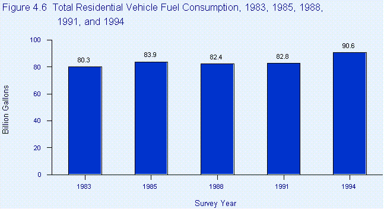
Sources: 1983--Energy Information Administration (EIA), Consumption Patterns of Household Vehicles 1983, DOE/EIA-0464(83) (Washington, DC, January 1985), Table 11. 1985--EIA, Consumption Patterns of Household Vehicles 1985, DOE/EIA-0464(85) (Washington, DC, April 1987), Table 8. 1988--EIA, Household Vehicles Energy Consumption 1988, DOE/EIA-0464(88) (Washington, DC, February 1990), Table 6. 1991--EIA, Household Vehicles Energy Consumption 1991, DOE/EIA-0464(91) (Washington, DC, December 1993), Table 8. 1994--Table 5.1 in this report.
The number of vehicle-miles traveled showed steady growth during the 1991-to-1994 period. One reason that total consumption rose more rapidly than the number of miles traveled during the period was the slowdown in the increase in the fuel economy of the residential fleet.
Passenger Cars Consumed the Largest Share of Motor Fuel
Although passenger cars still accounted for most of the motor fuel consumed by residential vehicles, their share of the total declined from nearly 70 percent in 1988 to 60 percent in 1994 (Figure 4.7). The decrease came as a result of growing consumer preferences for minivans, pickup trucks, and sport-utility vehicles. In the future, as light trucks continue to increase as a percentage of the residential fleet, their higher number of vehicle-miles traveled and lower fuel economies will accelerate the total amount of fuel they consume.
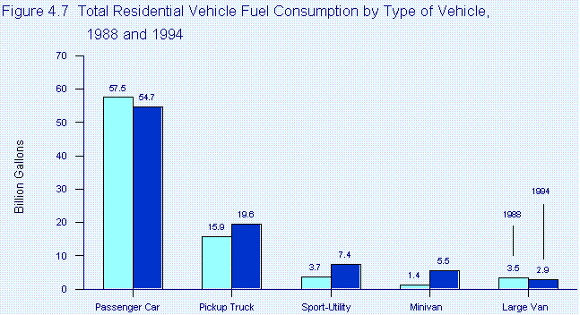
Sources: --1988 Energy Information Administration, Household Vehicles Energy Consumption 1988, DOE/EIA-0464(88) (Washington, DC, February 1990), Table 6. 1994--Table 5.1 in this report.
Passenger Cars Averaged the Least Motor Fuel Consumption per Vehicle
At 514 gallons per year, passenger cars registered the smallest fuel consumption per vehicle of all vehicle types in the residential fleet (Figure 4.8). That amount was similar to the 526-gallon average reported in 1988. Light-duty residential trucks (that is, all residential vehicles other than passenger cars) showed an increase in average consumption from 652 gallons per year in 1988 to 712 gallons per year in 1994. Fuel consumption by pickup trucks, the most prevalent of light trucks in the residential fleet, increased nearly 11 percent.
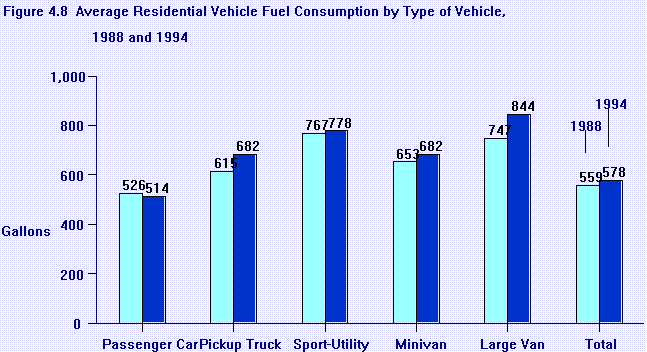
Sources: --1988 Energy Information Administration, Household Vehicles Energy Consumption 1988, DOE/EIA-0464(88) (Washington, DC, February 1990), Table 8. 1994--Table 5.3 in this report.
The Newest Vehicles Consumed the Most Fuel Because They Were Driven More
The newest vehicles in 1994 (model years 1993 and later) were driven more than 60 percent farther than the oldest vehicles (model years 1979 and earlier). Nevertheless, the oldest vehicles, because of their lower fuel economies, consumed nearly as much fuel on average as did the newest vehicles. Motor fuel consumption by vehicles of model years 1994 and 1995 averaged 697 gallons per year in 1994 (Figure 4.9). By comparison, vehicles of model years 1980 through 1982 consumed an average of 510 gallons per year in 1994. Although, as would be expected, the number of vehicles older than model year 1980 decreases over time, in 1994 there were still about 20 million of them in the residential fleet.
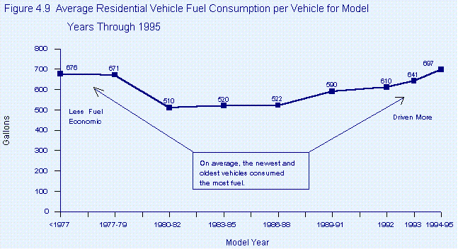
Source: Table 5.3 in this report.
Vehicles in the South Consumed the Most Fuel
Average fuel consumption per vehicle did not vary much by region (Figure 4.10). Vehicles in the South consumed an average of 598 gallons per year. Vehicles in the Midwest and West averaged 580 gallons per year and 568 gallons per year, respectively. In the Northeast, vehicles consumed 545 gallons per year, the lowest average of the four regions.
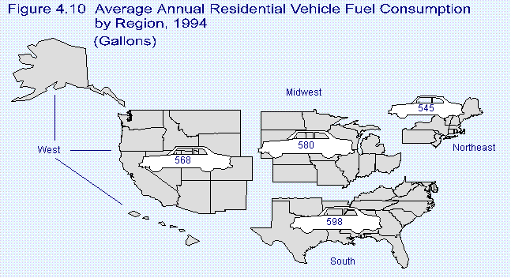
Source: Table 5.3 in this report.
Fuel Expenditures Varied by Household Characteristics
In households reporting owning or having access to at least one vehicle in 1994, residential expenditures for energy for transportation averaged $1,234. Which households were likely to spend more than the average? And how did average residential expenditures compare with residential expenditures for energy for all other uses, including space heating?
Inflation-Adjusted Expenditures for Vehicle Fuel Varied Very Little Over Time
The inflation-adjusted cost of purchasing fuel for residential vehicles remained relatively constant from 1988 through 1994 (Figure 4.11). During that period, the average fuel consumption per vehicle also changed little. The improvement in fuel economy for the residential vehicle fleet helped to keep expenditures and consumption nearly unchanged.
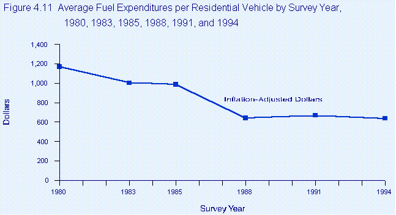
Sources: Fuel Expenditures: 1983--Energy Information Administration (EIA), Consumption Patterns of Household Vehicles 1983, DOE/EIA-0464(83) (Washington, DC, January 1985), Table 7. 1985--EIA, Consumption Patterns of Household Vehicles 1985, DOE/EIA-0464(85) (Washington, DC, April 1987), Table 8. 1988--EIA, Household Vehicles Energy Consumption 1988, DOE/EIA-0464(88) (Washington, DC, February 1990), Table 8. 1991--EIA, Household Vehicles Energy Consumption 1991, DOE/EIA-0464(91) (Washington, DC, December 1993), Table 10. 1994--Table 5.3 in this report. Implicit Price Deflators: EIA, Annual Energy Review 1995, DOE/EIA-0384(95) (Washington, DC, July 1996), Table E1.
Household Composition and Income Affected Fuel Expenditures
Household composition influenced motor fuel expenditures and average fuel expenditures per household varied widely. Households with a single adult aged 60 years old or more spent on average only $498 per year, while households with children aged 16 or 17 years spent on average $1,727 per year (Figure 4.12).
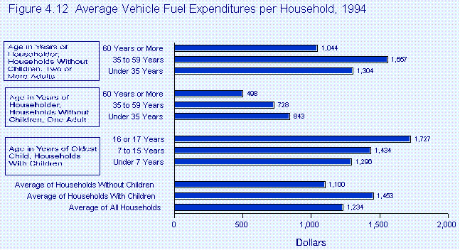
Source: Table 5.2 in this report.
Fuel expenditures per household also varied by household income. In general, higher-income households had higher expenditures for vehicle fuel (Figure 4.13). For example, householders with annual incomes of $75,000 or more
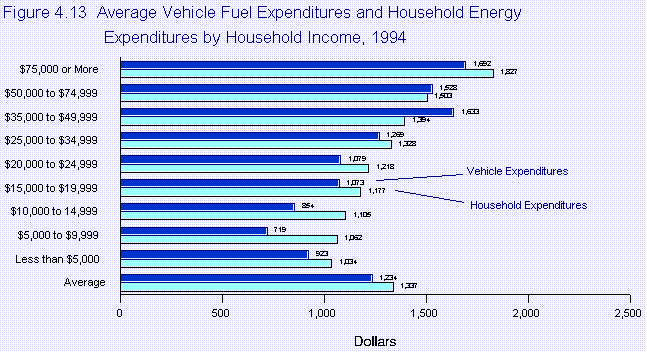
Note:
Household energy expenditures exclude household vehicle fuel expenditures.
Source: Table 5.18 in this report.
reported expenditures of $1,692 per year, whereas the poorest households (those with incomes of less than $5,000) reported expenditures of $923. Energy expenditures for residential transportation were close to half of the average household's total energy expenditures. Expenditures for non-transportation-related energy needs, such as heating, air-conditioning, lighting, and cooking, were $1,337, only slightly higher than the $1,234 spent for vehicle fuel.
1. Table 5.18 in this report.
File Last Modified: February 1, 2002
If you are having any technical problems with this site, please contact the EIA Webmaster at wmaster@eia.doe.gov